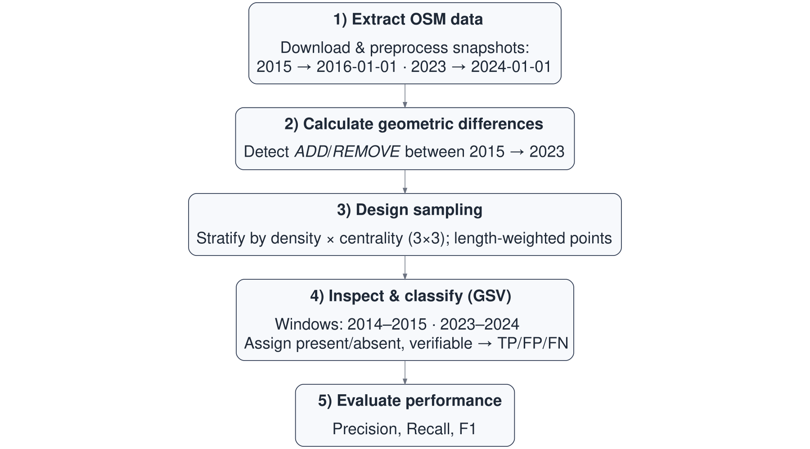

Validating OpenStreetMap for detecting cycling-infrastructure change: A Barcelona pilot using Google Street View (2015–2023)
Keywords
OpenStreetMap (OSM), Cycling infrastructure, Active travel, Built environment change, Data validation, Reproducible workflows, Barcelona
1. Introduction and motivation
In many cities worldwide, cycling networks have expanded over the past decade in pursuit of cleaner, healthier, and more equitable mobility. Yet, despite growing policy interest, few longitudinal datasets allow researchers to measure where and to what extent cycling infrastructure has changed. Official inventories are often inconsistent over time, and local audits are expensive and difficult to replicate elsewhere.
OpenStreetMap (OSM) offers a promising alternative. As a global, crowd-sourced spatial database in which every edit is timestamped, OSM provides the raw material to reconstruct historical changes in urban infrastructure. However, not all mapping edits correspond to physical change: contributors frequently adjust tags or geometries, sometimes producing apparent differences between time slices that have no counterpart in reality. Understanding and quantifying these discrepancies is essential before OSM can be used to monitor built-environment transformations (Ferster et al., 2020).
This study evaluates the reliability of OSM for detecting cycling-infrastructure change in Barcelona between 2015 and 2023, using Google Street View (GSV) imagery as ground truth. It investigates whether OSM reliably identifies added or removed cycle lanes, explores common sources of disagreement, and proposes a calibration framework that adjusts OSM-based estimates to real-world conditions. The work forms part of the ATRAPA project on Active Travel Transformations and Acceptability, which develops comparative analyses of sustainable-mobility interventions across European cities (GEMOTT Research Group, 2025).
2. Data and methods
The analysis followed a five-step reproducible workflow (Figure 1), combining OSM temporal differencing with stratified GSV validation. All stages were implemented in R using open-source packages such as sf, osmextract, sfnetworks, and leaflet.
Two OSM snapshots—dated 1 January 2016 and 1 January 2024, approximating the 2015 and 2023 situations—were used to construct baseline and follow-up cycling networks. A street segment was classified as cycling infrastructure when it was explicitly tagged as a cycleway, when any cycleway attribute indicated a lane or track (including separate or opposite directions), when designated as a bicycle road, or when mapped as a minor road with bicycle access but no motor vehicles. All other urban roads formed the comparison group of non-cycling infrastructure.
After data cleaning and projection, the two layers were compared geometrically. Segments present in 2023 but not in 2015 were considered added, while those disappearing between years were removed. Small positional shifts and tag refinements can produce false differences, so segments flagged simultaneously as added and removed within 15 m were treated as realignments and excluded from evaluation.
To ensure spatial representativeness, Barcelona’s 1 063 census tracts were cross-classified by population density and centrality into nine strata. Six tracts were selected at random within each stratum, yielding 54 tracts overall. Within them, up to two added, two removed, and one non-cycling segment were sampled. The midpoint of each segment served as a validation point and was linked to the nearest available GSV panorama.
Each sampled point was visually inspected by two trained coders for two anchor periods: around 2015 (baseline) and 2023 (follow-up). When imagery for the target year was unavailable or obscured, neighbouring years were consulted in a fixed order (2023 → 2024 → 2022 for follow-up; 2015 → 2014 → 2016 for baseline) until a clear judgement could be made. The coding rule was simple: 1 if cycling infrastructure was visible, 0 if clearly absent, and NA if indeterminate. In cases where OSM and GSV appeared to disagree, adjacent years were rechecked to ensure that discrepancies were not simply caused by timing differences between construction and image capture. Disagreements between coders were later reviewed jointly to rule out human error but without forcing consensus. Inter-rater agreement reached approximately 89 per cent.
Validation accuracy was assessed through standard metrics. Precision was defined as the proportion of OSM-detected changes that were real, recall as the proportion of real changes captured by OSM, and the F1 score as their harmonic mean. Wilson confidence intervals were calculated for each measure.
3. Results and discussion
Between 2015 and 2023, the OSM-derived cycling network in Barcelona increased from 153.6 to 288.4 km, representing an 88 per cent expansion (Figure 2). Geometric differencing indicated 156.0 km of added and 24.8 km of removed infrastructure, corresponding to a net gain of about 131 km. The small gap between this estimate and the change in totals (–3.7 km) suggests good internal consistency. Additions were concentrated in dense, central tracts such as D1_C2, D1_C3, and D3_C2, which together accounted for roughly 58 per cent of the new network length. Removals were much less common and tended to occur in intermediate-density areas.
Out of 105 sampled sites, 97 (92 per cent) provided usable GSV imagery. Forty-four corresponded to OSM-detected additions, seven to removals, and forty-six to non-cycling controls. Table 1 summarises the validation outcomes.
| Class | n | TP | FP | FN | Precision | Recall | F1 |
|---|---|---|---|---|---|---|---|
| ADD | 44 | 34 | 10 | 0 | 0.77 | 1.00 | 0.87 |
| REMOVE | 7 | 2 | 5 | 0 | 0.29 | 1.00 | 0.44 |
| Pooled | 51 | 36 | 15 | 0 | 0.71 | 1.00 | 0.83 |
Results show that OSM captures nearly all real additions (recall = 1.00) but also includes some false positives (precision ≈ 0.77). For removals, precision drops sharply to around 0.29, meaning that most apparent deletions do not correspond to true infrastructure loss. Overall precision across all changes is 0.71 with an F1 of 0.83.
Qualitative inspection revealed three main causes of mismatch. The most frequent was re-tagging, where contributors changed the tagging structure without any physical alteration—for example, replacing cycleway:left=lane with cycleway=lane. The second was micro-geometry adjustment, in which road centrelines were shifted slightly as part of routine map updates. The third involved ephemeral mapping churn, with temporary deletions or duplications created during editing sessions. These artefacts underline the socio-technical nature of OSM: it reflects not only infrastructure on the ground but also the behaviour of its volunteer community.
Taken together, these results suggest that OSM is a strong proxy for additions but a weaker one for removals. The asymmetry stems partly from the fact that contributors are more motivated to record new infrastructure than to delete existing features. Consequently, raw OSM differencing may overstate net network growth. A simple calibration using the observed precision (0.77) can correct this bias, yielding adjusted additions equal to 0.77 × (OSM additions). Because validation was stratified by density and centrality, calibration factors can also be applied by urban context, improving comparability across cities.
Beyond these empirical findings, the study offers methodological and theoretical advances. Methodologically, it demonstrates a transparent, open-source framework for assessing temporal reliability in OSM. The workflow—combining historical differencing, stratified sampling, and visual inspection—is reproducible in any city with sufficient Street View coverage. It underpins the ATRAPA Built Environment Transformations Dataset, which will extend this validation approach to other European cities including Milan, Ljubljana, Warsaw, Utrecht, Malmö, and Paris.
Theoretically, the work reinforces the view of OSM as a dynamic socio-technical system rather than a static dataset. Temporal variation in OSM captures both genuine infrastructure evolution and the rhythms of community mapping activity. By distinguishing true from artefactual edits, we move toward a framework for assessing the temporal validity of volunteered geographic information—essential for longitudinal research in transport, health, and environmental studies.
Limitations should be acknowledged. True removals were few, producing wide confidence intervals for that category. GSV imagery dates vary within each anchor year, occasionally creating minor mismatches. Although inter-rater agreement was high, subtle interpretive differences—for instance, in judging whether a lane is segregated or shared—remain possible. Finally, Barcelona’s large and active mapping community likely ensures relatively high data quality; replication in less-mapped cities will be required to test generalisability.
4. Conclusions and implications
This Barcelona pilot demonstrates that OSM can reliably detect additions to cycling infrastructure but struggles to capture removals. Overall, OSM slightly overstates network growth, mainly due to tag and geometry adjustments rather than real errors. Despite these limitations, OSM remains a valuable, low-cost resource for longitudinal analysis of transport infrastructure when accompanied by empirical calibration.
The study contributes a transparent validation framework that integrates OSM historical data, stratified sampling, and GSV-based inspection to produce quantitative precision and recall metrics. These can be used to adjust OSM-derived measures of change and enable cross-city comparison within the ATRAPA project. More broadly, the findings strengthen confidence in using volunteered geographic information for temporal urban analysis while highlighting the importance of understanding its social production mechanisms.
Acknowledgements
This research forms part of the ATRAPA project (Active Travel Transformations and Acceptability), which has received funding from the European Union (ERC, Horizon Europe, grant agreement No. 101117700) and from the Spanish Ministry of Science, Innovation and Universities (Ministerio de Ciencia, Innovación y Universidades, grant PID2022-136314OB-I00).
The authors gratefully acknowledge Víctor González Parra for his collaboration as second coder during the Google Street View validation, and thank the GEMOTT Research Group and the OpenStreetMap community for their invaluable contributions to open and reproducible research.
References
Ferster, C., Fischer, J., Manaugh, K., Nelson, T., Winters, M., 2020. Using OpenStreetMap to inventory bicycle infrastructure: A comparison with open data from cities. International Journal of Sustainable Transportation 14, 64–73. https://doi.org/10.1080/15568318.2018.1519746
GEMOTT Research Group, 2025. ATRAPA – The Active Travel Backlash Paradox.